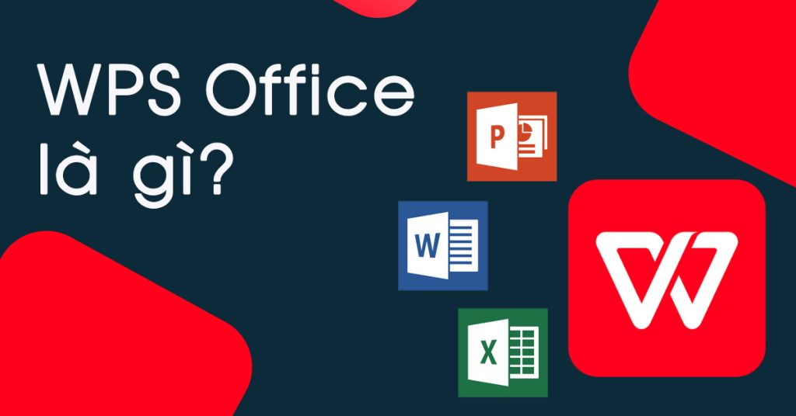

怎么修改WPS的语言？
2025年3月3日
打开WPS Office，点击左上角“WPS文字”或“WPS表格”菜单。选择“选项”进入设置界面。在“常规和保存”选项卡中，点击“语言设置”。在弹出的语言设置窗口中，选择所需的语言，点击“确定”。重启WPS使语言更改生效。
修改WPS语言的基本步骤
打开WPS并进入设置界面
- 启动WPS Office：首先，打开WPS应用程序。如果你尚未安装WPS，可以访问WPS官网下载安装并登录。启动后，你可以选择进入任何WPS组件，如WPS文字、WPS表格或WPS演示。
- 进入“文件”菜单：在WPS界面的左上角，点击“文件”菜单，随后在下拉菜单中选择“选项”，进入WPS的设置页面。这里是进行语言修改的关键步骤。
- 找到语言设置选项：在打开的“选项”界面中，切换到“常规和保存”选项卡，找到“语言设置”按钮并点击，进入语言选择窗口。
选择并应用所需语言
- 选择目标语言：在弹出的“语言设置”窗口中，你会看到一个下拉菜单，列出所有可用的语言选项。选择你需要的语言（如中文、英文等），点击后该语言会被选中。
- 确认设置并保存：选好语言后，点击“确定”按钮。此时，WPS会保存你的语言设置并开始加载对应的语言包。确保网络连接正常，因为某些语言包可能需要联网下载。
- 重启WPS应用：语言设置完成后，通常需要重启WPS应用程序，才能使新的语言设置生效。关闭WPS后，再次打开你之前使用的WPS组件，检查界面是否已显示为选定的语言。
WPS语言设置位置详细介绍
查找“语言设置”选项
- 进入WPS主界面：首先，启动WPS Office应用程序，进入主界面。在这里，你可以选择任何WPS组件，如WPS文字、WPS表格或WPS演示等，进行语言设置。
- 访问“文件”菜单：在WPS应用程序的界面左上角，找到并点击“文件”菜单。这个菜单通常包含文件操作、打印和设置等常用功能。当你点击“文件”后，会看到一个下拉菜单，其中包含了各种设置选项。
- 选择“选项”进入设置界面：在下拉菜单中找到“选项”选项，点击它进入WPS的设置窗口。这个窗口是所有WPS配置的入口，能够调整界面的显示方式、功能快捷键、默认保存路径等。要修改语言设置，就需要进入此界面。
进入WPS选项界面
- 打开WPS设置窗口：进入“选项”界面后，你将看到一个设置窗口，窗口中包含多个选项卡，如“常规和保存”、“高级”和“视图”等。在这个设置界面中，你可以对WPS的各项功能进行详细配置。
- 选择“常规和保存”选项卡：在“选项”窗口中，切换到“常规和保存”选项卡。这是默认的选项卡，其中包含了许多常见的设置选项，包括程序启动时的设置、自动保存文件的时间间隔以及语言选择等。
- 定位到“语言设置”按钮：在“常规和保存”选项卡中，向下滚动，直到找到“语言设置”按钮。点击该按钮，你将进入WPS的语言设置窗口，这里列出了所有支持的语言，可以选择你需要的显示语言和输入法语言。

更改WPS语言对文件显示的影响
语言更改对界面语言的作用
- 界面语言更新：更改WPS的显示语言后，WPS应用程序的界面语言会立即更新。比如，当你从中文切换到英文时，所有菜单、按钮和操作提示都会自动转换为英文。这使得不同语言的用户可以在自己的语言环境中操作WPS。
- 功能菜单变化：更改语言后，WPS的功能菜单和各项设置项也会跟随语言变化。例如，“文件”、“编辑”、“工具”等菜单项会从中文转为英文或其他选择的语言。这种变化使得界面更加直观且易于理解。
- 界面适应性：语言更改后，WPS界面有时会做些微调，特别是对于某些字符较长的语言（如德语、俄语），以适应新语言的显示需求。即使界面元素有所调整，WPS依然会尽力保证整体布局的美观和实用性。
更改语言对输入法的影响
- 输入法自动切换：更改WPS语言后，输入法的语言通常也会自动调整。例如，切换到中文界面时，系统会自动启用中文输入法；切换到英文界面时，系统可能会自动激活英文输入法。这种自动切换可以帮助用户在不同语言环境中轻松输入。
- 输入法快捷键变化：部分输入法的快捷键或操作方式可能会因语言变化而不同。举例来说，中文输入法和英文输入法在切换时，快捷键的布局和功能也会有所调整。因此，用户可能需要重新熟悉输入法的快捷键配置。
- 多语言输入支持：WPS语言更改时，输入法也会根据所选语言进行调整。在多语言环境中，输入法的语言切换可能会影响输入的准确性。用户可以手动切换输入法语言，确保与文档语言一致，从而避免输入错误。
如何更改WPS Office中的显示语言
设置WPS为中文、英文等语言
- 进入设置界面：首先，打开WPS Office应用程序，进入你常用的模块，如WPS文字、WPS表格或WPS演示。在界面的左上角点击“文件”菜单，选择“选项”进入设置界面。
- 选择语言设置：在“选项”窗口中，切换到“常规和保存”选项卡，找到“语言设置”按钮。点击后，会打开语言选择界面，显示出可供选择的所有语言。
- 选择所需语言：在语言选择窗口中，你可以看到中文、英文等多个语言选项。选择你需要的语言后，点击“确定”按钮进行确认。此时，WPS会保存设置并开始加载对应的语言包。
更改多语言之间的切换方法
- 手动切换语言：在WPS中，你可以根据需要随时更改显示语言。当需要从中文切换到英文或其他语言时，重复上述步骤，进入语言设置界面选择新的语言，然后保存并重启WPS应用程序。
- 自动识别语言：某些情况下，WPS可以根据你所使用的输入法或操作系统自动识别语言。如果你在输入中文时，WPS会自动显示中文界面，切换到英文输入时，界面会自动变为英文。
- 快速语言切换：对于常用语言之间的快速切换，WPS提供了多语言支持功能，允许用户在不同语言环境中灵活切换。你可以在设置中选择多个语言，在使用过程中随时进行调整，无需关闭或重启程序。

修改WPS语言后如何恢复默认设置
如何恢复初始语言
- 访问WPS设置界面：首先，打开WPS Office应用程序，进入主界面后，点击左上角的“文件”菜单。在下拉菜单中选择“选项”，进入WPS的设置界面。
- 选择语言设置：在“选项”窗口中，切换到“常规和保存”选项卡。这里可以找到“语言设置”按钮，点击进入语言设置界面，选择恢复到默认语言。
- 恢复初始语言：在语言设置界面中，你会看到“恢复默认语言”选项。选择此选项后，WPS将自动恢复为安装时的初始语言（通常为中文）。确认后，点击“确定”按钮，保存更改。
默认语言的恢复方法
- 检查当前语言设置：更改语言后，若想恢复默认语言，可以首先检查当前显示的语言。进入“选项”界面，查看“语言设置”选项卡，确定当前语言设置是否需要更改。
- 手动切换为默认语言：如果“恢复默认语言”选项不可用，可以手动从语言列表中选择WPS默认的初始语言（如中文）。选中后，点击“确定”保存设置。
- 重启WPS应用：语言更改后，通常需要重启WPS应用才能生效。在切换回默认语言后，关闭并重新启动WPS Office，检查语言设置是否已恢复为默认的初始语言。
WPS语言修改后没有生效怎么办？
修改语言后，可能会出现WPS界面未更新的情况。解决方法是确保你在“语言设置”中选择了正确的语言，并点击“确定”保存设置。修改语言后，必须重启WPS应用程序才能使新的语言设置生效。如果重启后依然未生效，可以尝试重新进入语言设置，确保语言包已正确加载。
如何切换WPS语言到英文或其他语言？
在WPS中切换语言到英文或其他语言非常简单。首先进入WPS的设置界面，选择“语言设置”按钮。然后从下拉菜单中选择你希望使用的语言，如英文、法语等。选择后点击“确定”，重启WPS应用程序即可切换成功。
修改WPS语言后，输入法会变化吗？
修改WPS的显示语言后，系统的输入法语言有时会随之变化。例如，切换到中文界面时，输入法可能自动切换为中文输入法。若想避免这种自动切换，可以手动设置输入法的语言，确保它与当前使用的WPS语言匹配。
上一篇：
WPS PDF目录在哪？
最新文章
如果WPS未保存文档并意外关闭，可以通过“自动恢复”功能尝试找回数据。打开WPS…
在WPS中打印Excel文件，首先打开文件并点击左上角的“文件”按钮，选择“打印…
在WPS中使用格式刷，首先选中已设置好格式的单元格或文本，点击“开始”菜单中的“…
打开WPS Office，点击左上角“WPS文字”或“WPS表格”菜单。选择“选…
WPS PDF的目录功能位于左侧面板。在打开PDF文件后，点击界面左侧的“目录”…
要删除WPS网盘图标，首先右键点击桌面上的WPS网盘图标，选择“删除”或“卸载”…